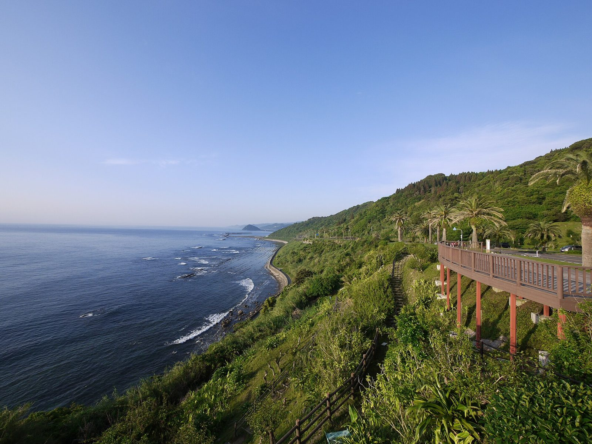
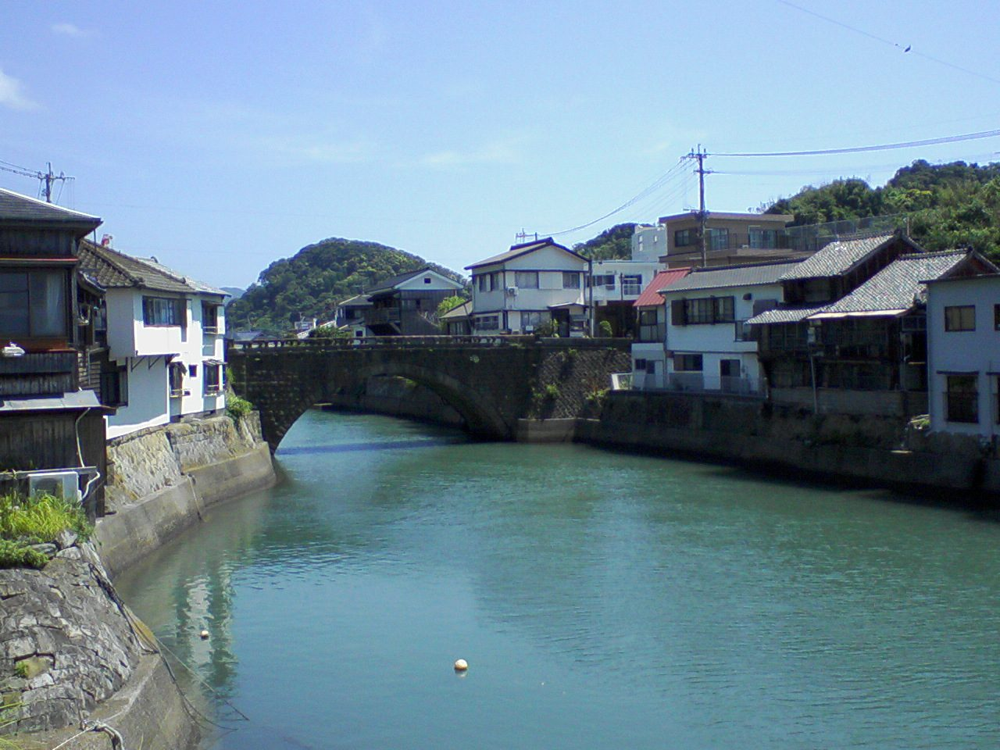
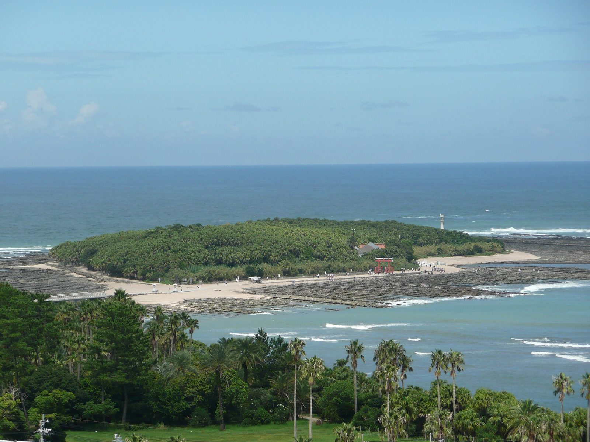

お店について
現時点で公開情報が少ないため、確認できた範囲のみ掲載しています。
| 店名 | Cerulean cafe |
|---|---|
| 所在地 | 宮崎県日南市西弁分5丁目1-4 |
| 電話 | 050-3690-1178 |
| @_____cerulean | |
| 営業時間 | 準備中(お問い合わせください) |
| 定休日 | 準備中(お問い合わせください) |
| ご予約 | 準備中(お問い合わせください) |
| 駐車場 | 準備中(お問い合わせください) |
| スタッフ | 準備中(お問い合わせください) |
デザインのモチーフ
「Cerulean(セルリアン)」は、空のような明るい青を指す言葉です。このサンプルページでは、空と海の青をデザイン上のモチーフにしています。これはページを制作した側の発想であり、店名の由来やお店の想いを示すものではありません。
日南のまち
日南市は、宮崎県南部の日向灘に面したまちです。青島から南へ続く日南海岸は、波が削った「鬼の洗濯板」と呼ばれる岩場などの海岸景観で知られます。内陸には、江戸時代の面影を残す飫肥(おび)の城下町があり、飫肥杉の産地としても知られています。
上記は日南エリアの一般的な紹介で、お店との関係を示すものではありません。


